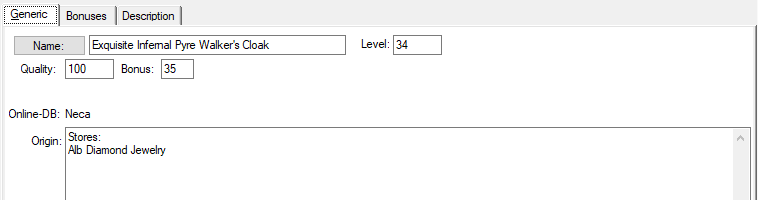

Object - General

Here are the general values and data of the item at the selected
position. Certain fields have different meanings depending on the chosen
position or are not available at all.
Name:
Here is the name of the item. With a click on the name button, this field
is switched to the display / entry of the original name.
Level:
Here is the stage of the object. This field is also calculated
automatically when a value is entered in the DPS or AF field.
Quality:
Here is the quality of the item.
Bonus:
Here is the bonus of the item.
DPS / AF:
Here is the DPS value for weapons resp. the AF value in armaments.
Speed:
Here, weapons are the value of the delay in attack.
Type of weapon / armor:
In this field is the general category of weapon / armor.
Type of damage:
In the case of weapons, the type of damage can be selected here.
further fields
In the case of weapons and armor produced by players, there are 2 further
fields in which the subspecies of the object as well as the material level
can be set. The values characteristic of the object thus set are set
automatically.